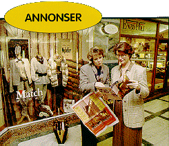
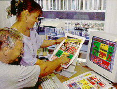
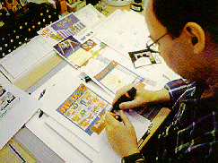

Annonsekonsulent Hanne Garberg er ofte på besøk hos Aftenpostens annonsører. Her gjennomgår hun et annonsebilag med senterlederen i Paleet - og nye annonser og bilag planlegges.

Annonsekonsulent Marianne Sunde og typograf Øystein Hallgren samarbeider for å gjøre et annonsebilag for Jens Evensen mest mulig fristende for Aftenpostens lesere.

Aftenpostens annonsører kan få hjelp til utforming av annonsene sine. Art Director Dag Jørgensen og de andre på Markedssetteriet lager annonser som selger.
Slik lages Aftenposten

[Innhold] [Info]
[Aftenposten hjemmeside] [Til Ung hovedside]